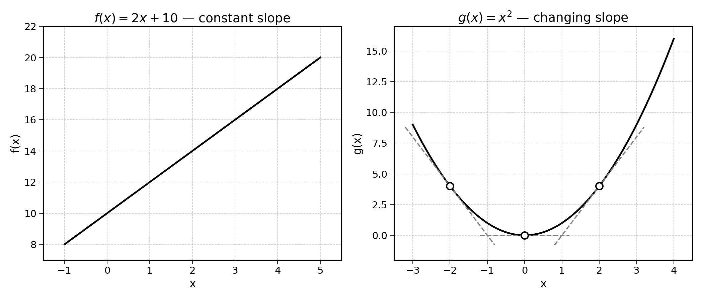
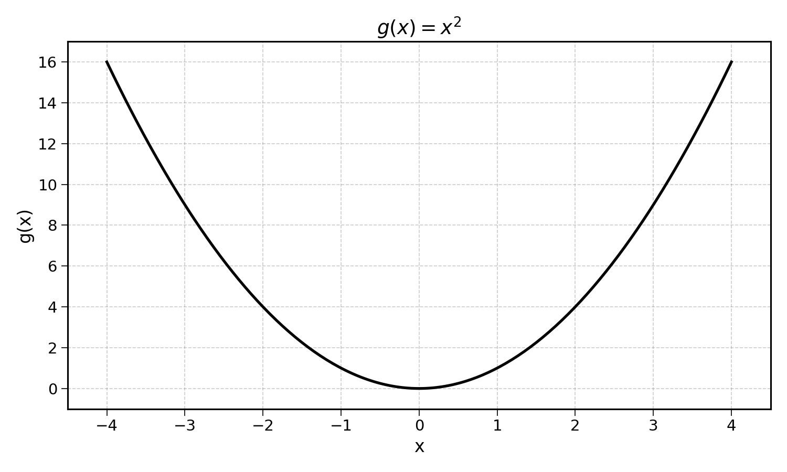
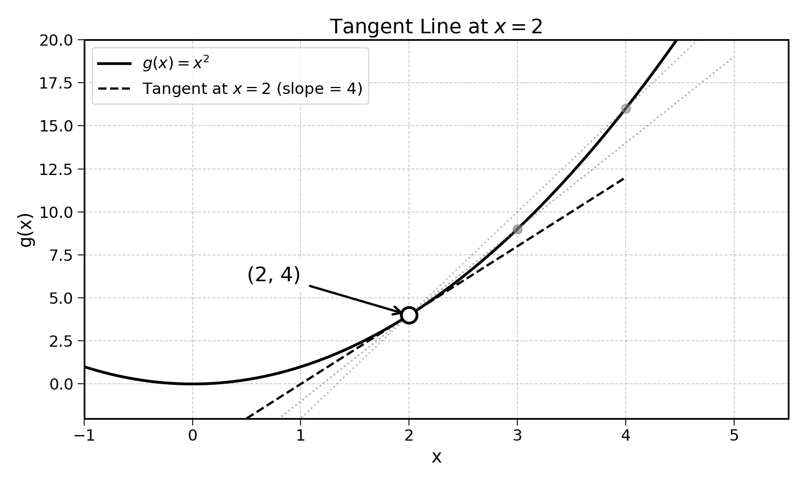
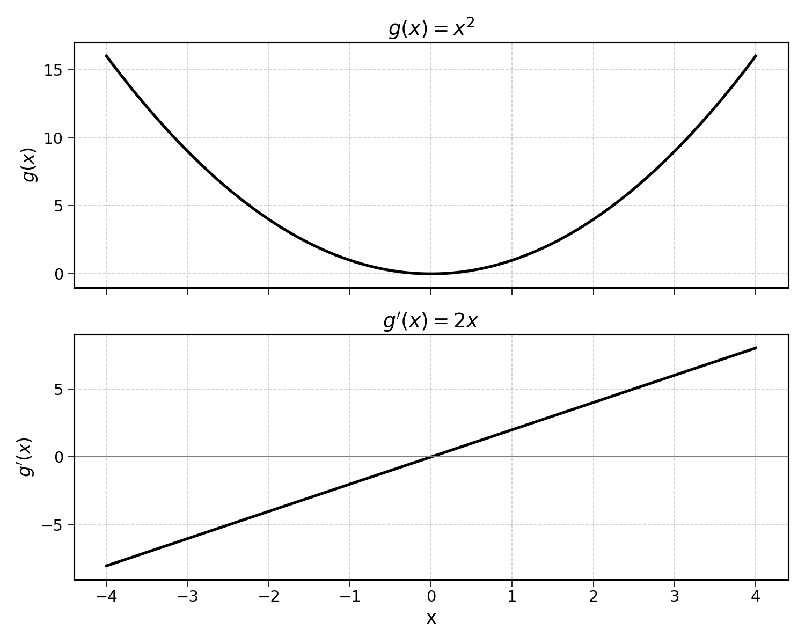
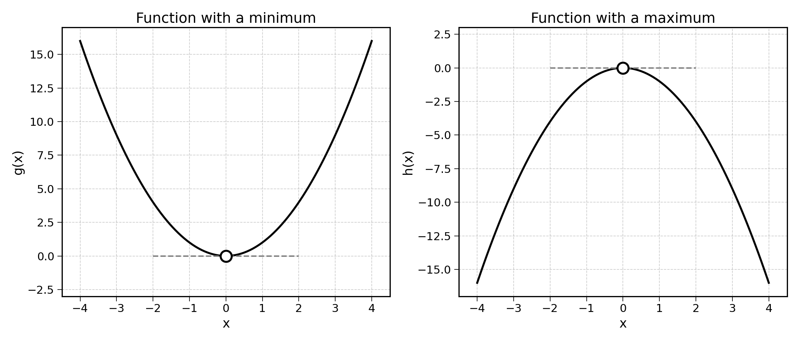
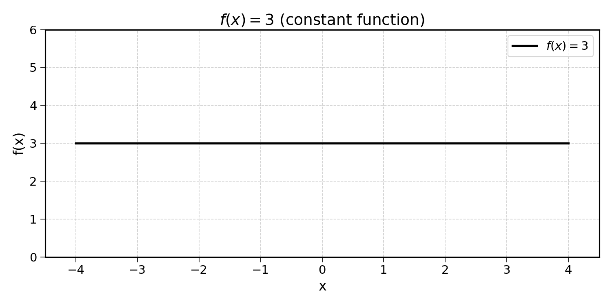

8 Derivatives
In the last chapter, we saw how the mean squared error changed with regards to the slope of a linear regression. Learning is the process of finding the parameters (here the slope) that achieve the lowest prediction error.
But to adjust the slope, we need to know: in which direction should we change it? Should we make the coefficient bigger or smaller? By how much?
To answer these questions, we need to measure how the output of a function changes when we change its input. This is the idea behind the derivative.
8.1 The Slope of a Line
Consider the ice cream sales function from a previous chapter:
\[ f(x) = 10 + 2x \]
If the temperature \(x\) increases by 1 degree, the predicted sales \(f(x)\) increase by 2. Always. That is what the slope of 2 means, for every step to the right, the output goes up by 2.
| \(x\) | \(f(x)\) | Change in \(f(x)\) |
|---|---|---|
| 0 | 10 | — |
| 1 | 12 | +2 |
| 2 | 14 | +2 |
| 3 | 16 | +2 |
The slope is constant, it is the same everywhere. This is what makes lines simple: their rate of change never varies.

8.2 Curves Have Changing Slopes
Let’s focus on the more interesting function:
\[ g(x) = x^2 \]
| \(x\) | \(g(x)\) | Change in \(g(x)\) |
|---|---|---|
| 0 | 0 | — |
| 1 | 1 | +1 |
| 2 | 4 | +3 |
| 3 | 9 | +5 |
| 4 | 16 | +7 |
The change is not constant. Near \(x = 0\), the function is relatively flat. Near \(x = 4\), it is steep. The slope depends on the value of \(x\).

The shape of the curve defined by \(g(x)\) should remind you of the mean squared error for different slope values from the previous chapter. If so, well done, this is exactly where this chapter is going.
How do we compute the slope of a curve at a specific point?
8.3 The Derivative
The derivative of a function tells you its rate of change at every point. It answers the question: “If I nudge the input by a small amount, how much does the output change?”
Let’s start with something we already know. Using \(f(x) = 10 + 2x\), the rate of change between \(x_1 = 2\) and \(x_2 = 4\) is:
\[ \frac{\text{Change in output}}{\text{Change in input}} = \frac{f(4) - f(2)}{4 - 2} = \frac{18 - 14}{2} = \frac{4}{2} = 2 \]
More generally, the rate of change can be written as:
\[ \frac{f(x + h) - f(x)}{h} \]
Here, \(h\) is the step size: the distance between the two points. The derivative is the rate of change between two points as the distance between them shrinks to 0.
In other words the derivative is this rate of change as \(h\) tends to 0:
\[ f'(x) = \lim_{h \to 0} \frac{f(x + h) - f(x)}{h} \]
This reads: “the derivative of \(f\) at \(x\), noted \(f'(x)\), is the limit of the rate of change as the step size \(h\) approaches 0.”
You may also see the derivative written as \(\frac{df}{dx}\), which reads “the change in \(f\) per small change in \(x\).”
For a linear function, the derivative is simply the slope. This should intuitively make sense, as the rate of change of a linear function is constant.
Let’s verify this with \(f(x) = 10 + 2x\) at \(x = 2\), using smaller and smaller step sizes:
| Step size \(h\) | Rate of change \(\frac{f(2+h) - f(2)}{h}\) |
|---|---|
| 2 | \(\frac{18 - 14}{2} = 2\) |
| 1 | \(\frac{16 - 14}{1} = 2\) |
| 0.5 | \(\frac{15 - 14}{0.5} = 2\) |
| 0.1 | \(\frac{14.2 - 14}{0.1} = 2\) |
The rate of change is always \(2\), no matter the step size. The derivative of \(f\) is \(2\) for every value of \(x\).
What about \(g(x) = x^2\)? Let’s compute the rate of change at \(x = 2\) with smaller and smaller steps:
| Step size \(h\) | Rate of change \(\frac{g(2+h) - g(2)}{h}\) |
|---|---|
| 2 | \(\frac{16 - 4}{2} = 6\) |
| 1 | \(\frac{9 - 4}{1} = 5\) |
| 0.5 | \(\frac{6.25 - 4}{0.5} = 4.5\) |
| 0.1 | \(\frac{4.41 - 4}{0.1} = 4.1\) |
As \(h\) gets smaller, the rate of change gets closer to 4. The derivative of \(g\) at \(x = 2\) is:
\[ g'(2) = 4 \]
We can also show this using limit calculus, by taking the rate of change formula and letting \(h\) approach 0:
\[ \begin{aligned} g'(2) &= \lim_{h \to 0} \frac{g(2 + h) - g(2)}{h} \\ &= \lim_{h \to 0} \frac{(2 + h)^2 - 2^2}{h} \\ &= \lim_{h \to 0} \frac{4 + 4h + h^2 - 4}{h} \\ &= \lim_{h \to 0} \frac{4h + h^2}{h} \\ &= \lim_{h \to 0} (4 + h) \\ &= 4 \end{aligned} \]
This confirms the value the table was getting close to.

What about at \(x = 0\)?
\[ g'(0) = \lim_{h \to 0} \frac{g(0 + h) - g(0)}{h} = \lim_{h \to 0} \frac{(0 + h)^2 - 0^2}{h} = \lim_{h \to 0} \frac{h^2}{h} = \lim_{h \to 0} h = 0 \]
The derivative is 0, meaning the function is flat at that point. Looking at the plot of \(g(x) = x^2\), this makes sense, the function does not change much around \(x = 0\).
Instead of calculating \(g'(x)\) for every value of \(x\) individually, we can derive it for all values of \(x\) at once:
\[\begin{aligned} g'(x) &= \lim_{h \to 0} \frac{g(x + h) - g(x)}{h} \\ &= \lim_{h \to 0} \frac{(x + h)^2 - x^2}{h} \\ &= \lim_{h \to 0} \frac{x^2 + 2xh + h^2 - x^2}{h} \\ &= \lim_{h \to 0} \frac{2xh + h^2}{h} \\ &= \lim_{h \to 0} \frac{h(2x + h)}{h} \\ &= \lim_{h \to 0} (2x + h) \\ &= 2x \end{aligned}\]
Note the step where we factor \(h\) out of the numerator: this allows us to simplify the fraction by dividing both numerator and denominator by \(h\).
If you find some parts of this calculation confusing, I would recommend reviewing the concept of limits and some basic calculus. The key idea is straightforward: as \(h\) becomes infinitely small, any term containing \(h\) vanishes.
This is a key result: for all values of \(x\), \(g'(x) = 2x\). Plotting both the function and its derivative confirms this:

Note that when \(g'(x)\) is negative, \(g(x)\) decreases; and the other way around.
8.4 Positive, Negative, and Zero Slopes
The sign of the derivative indicates the direction of change:
- Positive derivative (\(f'(x) > 0\)): The function is increasing. As \(x\) gets bigger, \(f(x)\) gets bigger too.
- Negative derivative (\(f'(x) < 0\)): The function is decreasing. As \(x\) gets bigger, \(f(x)\) gets smaller.
- Zero derivative (\(f'(x) = 0\)): The function is flat at that point, neither increasing nor decreasing. This often corresponds to a minimum or maximum.
The point where \(f'(x) = 0\) is especially interesting. For the function \(g(x) = x^2\), the derivative is zero at \(x = 0\), which is exactly where the function reaches its minimum value. Can you see how this connects to finding the minimum of the MSE curve?
One important note: a derivative of zero does not always indicate a minimum. It could also be a maximum. The function \(g(x) = x^2\) has a minimum at \(x = 0\), while the function \(h(x) = -x^2\) has a maximum at the same point. In both cases, the derivative is zero.

8.5 A Few Derivatives
In practice, we do not use the limit formula each time we need to calculate a derivative. There are shortcuts we can use.
| Function \(f(x)\) | Derivative \(f'(x)\) | In words |
|---|---|---|
| \(c\) (constant) | \(0\) | Constants do not change |
| \(ax\) | \(a\) | Slope of \(a\) everywhere |
| \(x^2\) | \(2x\) | Slope depends on position |
| \(x^n\) | \(nx^{n-1}\) | The power rule |
The general rule for powers: if \(f(x) = x^n\), then \(f'(x) = n \cdot x^{n-1}\). For instance, for \(g(x) = x^3\), \(g'(x) = 3x^2\).
And for a constant multiplier: if \(f(x) = c \cdot x^n\), then \(f'(x) = c \cdot n \cdot x^{n-1}\). For example, for \(g(x) = 4x^3\), \(g'(x) = 4 \cdot 3x^2 = 12x^2\).
Why is the derivative of a constant equal to 0?

As you can see above, constant functions never change. Their rate of change is the same for all values of \(x\): 0.
One more derivative worth knowing: the derivative of \(\frac{1}{x}\). This can be rewritten as \(x^{-1}\), so using the power rule:
\[ f(x) = \frac{1}{x} = x^{-1} \implies f'(x) = -1 \cdot x^{-2} = -\frac{1}{x^2} \]
The negative sign tells us that \(\frac{1}{x}\) is a decreasing function (for positive \(x\)): as \(x\) gets bigger, \(\frac{1}{x}\) gets smaller.
Exercise 8.1 Using the rules above, compute the derivatives of the following functions:
- \(f(x) = 7x + 3\)
- \(g(x) = x^3\)
- \(h(x) = 4x^2\)
- \(p(x) = \frac{5}{x}\)
8.6 Derivative of a Sum
What would be the derivative of the following function?
\[ f(x) = x^2 + 2x + 1 \]
If you guessed \(f'(x) = 2x + 2\), well done, you are right!
The derivative of a sum is the sum of the derivatives. The derivative of \(f(x)\) is the derivative of \(x^2\) + the derivative of \(2x\) + the derivative of \(1\):
\[ f'(x) = 2x + 2 + 0 = 2x + 2 \]
We have already seen all of the individual derivatives, we now just have to put them together.
Exercise 8.2 Compute the derivative of the function \(f(x) = 3x^2 + 5x + 10\).
When two functions are multiplied together, the derivative is not simply the product of the individual derivatives. Instead, we use the product rule:
\[ \text{If } f(x) = u(x) \cdot v(x), \text{ then } f'(x) = u'(x) \cdot v(x) + u(x) \cdot v'(x) \]
Let’s make this concrete. Consider:
\[ f(x) = x^2 \cdot (3x + 1) \]
Here, \(u(x) = x^2\) and \(v(x) = 3x + 1\). Using the product rule:
\[\begin{aligned} f'(x) &= u'(x) \cdot v(x) + u(x) \cdot v'(x) \\ &= 2x \cdot (3x + 1) + x^2 \cdot 3 \\ &= 6x^2 + 2x + 3x^2 \\ &= 9x^2 + 2x \end{aligned}\]
When two functions are divided, we use the quotient rule:
\[ \text{If } f(x) = \frac{u(x)}{v(x)}, \text{ then } f'(x) = \frac{u'(x) \cdot v(x) - u(x) \cdot v'(x)}{[v(x)]^2} \]
As an example, consider:
\[ f(x) = \frac{x^2}{x + 1} \]
Here, \(u(x) = x^2\) and \(v(x) = x + 1\). Applying the quotient rule:
\[\begin{aligned} f'(x) &= \frac{2x \cdot (x + 1) - x^2 \cdot 1}{(x + 1)^2} \\ &= \frac{2x^2 + 2x - x^2}{(x + 1)^2} \\ &= \frac{x^2 + 2x}{(x + 1)^2} \end{aligned}\]
Exercise 8.3
- Using the product rule, find the derivative of \(f(x) = x \cdot (x^2 + 2)\).
- Using the quotient rule, find the derivative of \(g(x) = \frac{3x}{x + 5}\).
8.7 Final Thoughts
The derivative measures the rate of change of a function at any given point. For linear functions, the derivative is simply the slope. For non-linear functions like \(x^2\), the derivative changes depending on the value of \(x\).
Derivatives tell us which direction the function is increasing. When \(f'(x) > 0\), the function is going up. When \(f'(x) < 0\), the function is going down. When \(f'(x) = 0\), the function is at a minimum or maximum.
In the next chapter, we will see how derivatives can help us find the minimum of the MSE curve and find the optimal slope of a linear regression.
8.8 Solutions
Solution 8.1. Exercise 8.1
\(f(x) = 7x + 3\)
Using the rule for linear functions: \(f'(x) = 7\)
\(g(x) = x^3\)
Using the power rule (\(x^n \to nx^{n-1}\)): \(g'(x) = 3x^2\)
\(h(x) = 4x^2\)
The constant 4 stays, and the derivative of \(x^2\) is \(2x\): \(h'(x) = 4 \times 2x = 8x\)
\(p(x) = \frac{5}{x} = 5x^{-1}\)
Using the power rule: \(p'(x) = 5 \times (-1) \times x^{-2} = -\frac{5}{x^2}\)
Solution 8.2. Exercise 8.2
\[\begin{aligned} f(x) &= 3x^2 + 5x + 10 \\ f'(x) &= 3 \times 2x + 5 + 0 \\ &= 6x + 5 \end{aligned}\]
The derivative of \(3x^2\) is \(6x\), the derivative of \(5x\) is \(5\), and the derivative of \(10\) is \(0\).
Solution 8.3. Exercise 8.3
- \(f(x) = x \cdot (x^2 + 2)\)
With \(u(x) = x\) and \(v(x) = x^2 + 2\):
\[\begin{aligned} f'(x) &= u'(x) \cdot v(x) + u(x) \cdot v'(x) \\ &= 1 \cdot (x^2 + 2) + x \cdot 2x \\ &= x^2 + 2 + 2x^2 \\ &= 3x^2 + 2 \end{aligned}\]
- \(g(x) = \frac{3x}{x + 5}\)
With \(u(x) = 3x\) and \(v(x) = x + 5\):
\[\begin{aligned} g'(x) &= \frac{u'(x) \cdot v(x) - u(x) \cdot v'(x)}{[v(x)]^2} \\ &= \frac{3 \cdot (x + 5) - 3x \cdot 1}{(x + 5)^2} \\ &= \frac{3x + 15 - 3x}{(x + 5)^2} \\ &= \frac{15}{(x + 5)^2} \end{aligned}\]